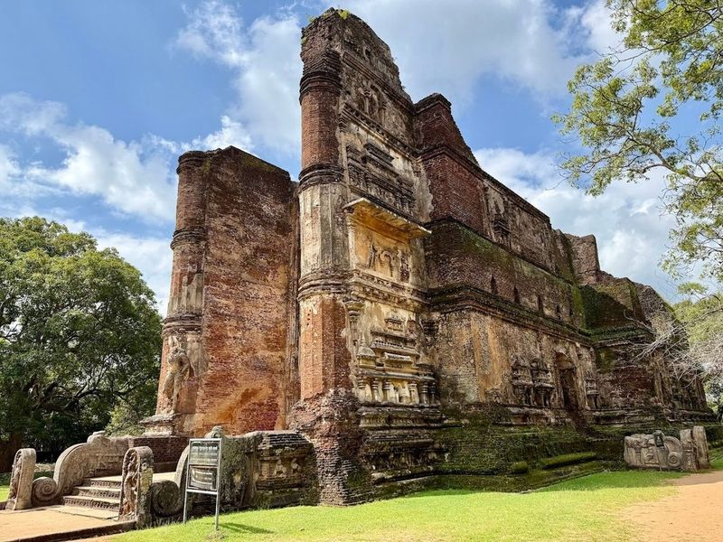
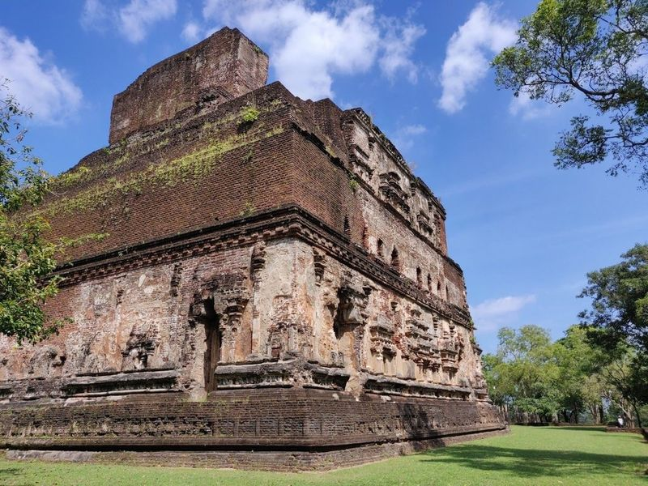
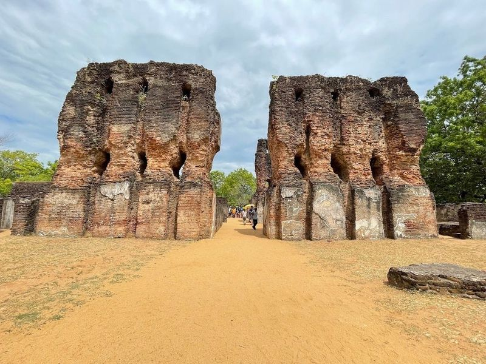
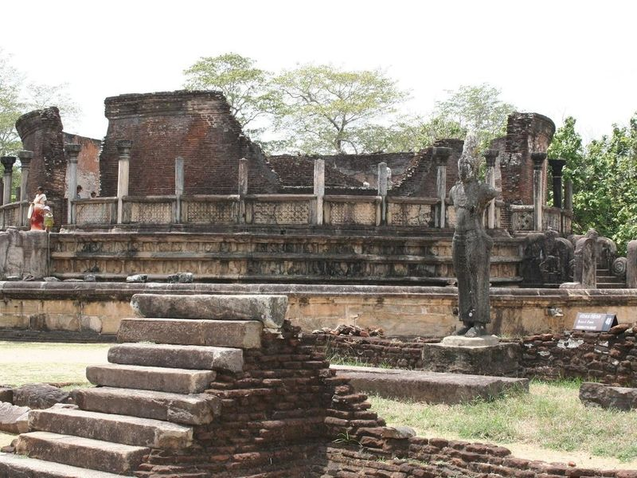
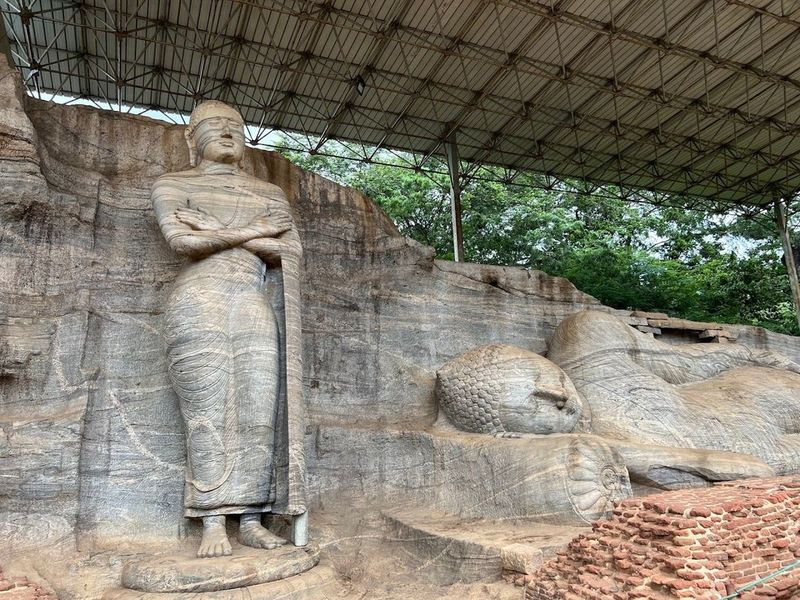
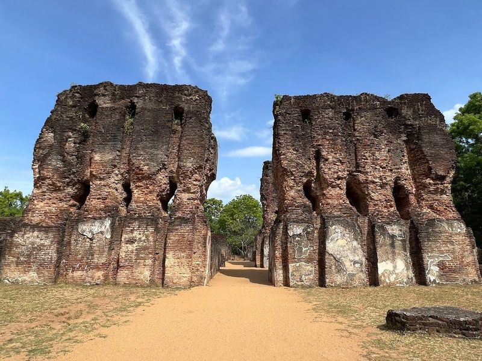
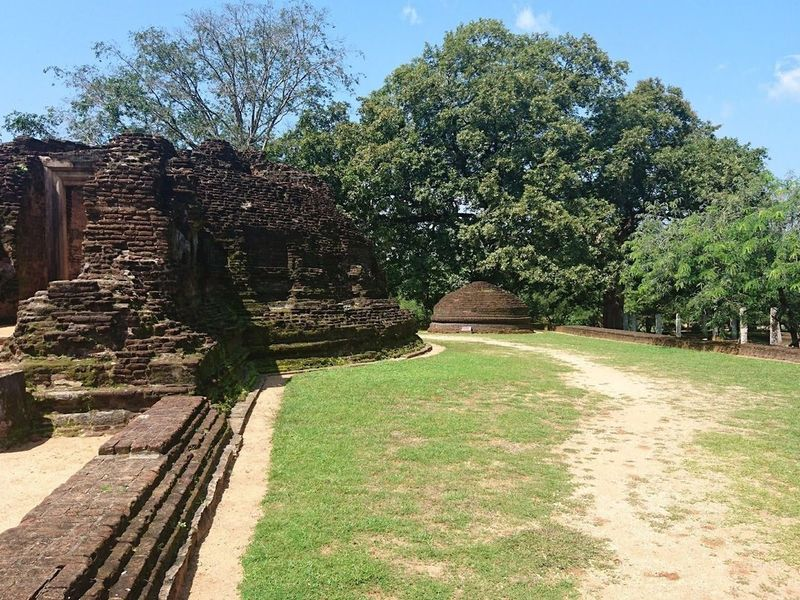
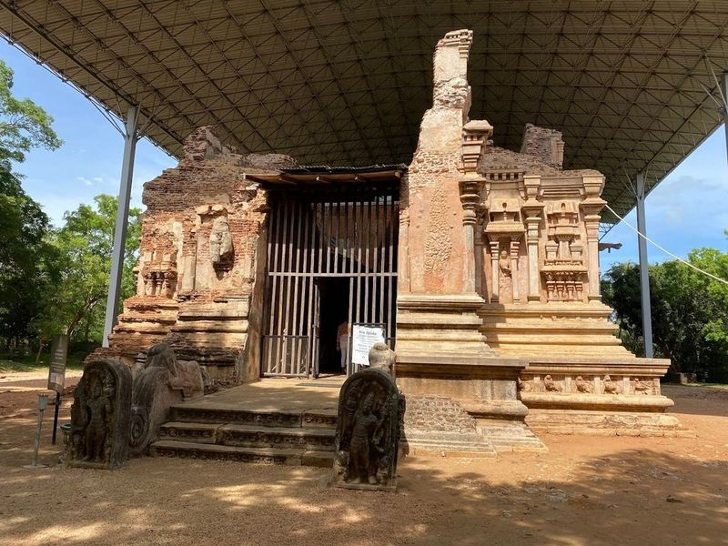
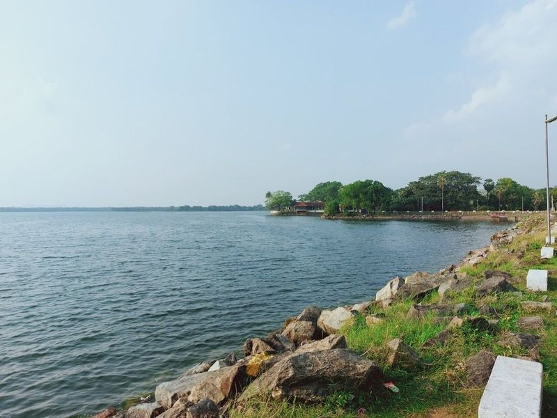

Explore Polonnaruwa
A Brief History
Polonnaruwa succeeded Anuradhapura as Sri Lanka's medieval capital after Chola invasions, flourishing under Parakramabahu I in the twelfth century. Gal Vihara rock Buddhas, royal palace foundations, and reservoir works record Sinhalese revival and hydraulic engineering. Parakrama Samudra embankments and quadrangle ruins extend medieval Sinhalese capitals across the dry zone.
Attractions Map
Top Sights & Activities

Gal Viharaya
Uththararamaya, also known as Gal Vihara, is an ancient rock temple in Sri Lanka that features four impressive Buddha statues carved into a single rock face. Built by King Parakramabahu the Great, this site was once a center for Buddhist learning. The standing Buddha statue here has sparked historical debate, with some experts suggesting it may depict a disciple of the Buddha.

Lankatilaka Temple
Lankatilaka Temple is a remarkable Buddhist temple situated within the Polonnaruwa Archaeological Site. It is celebrated for its towering and intricately designed structure, blending stone and brick construction. Visitors can wander through its chambers and courtyards, marveling at the exceptional craftsmanship that characterizes this ancient religious complex.

Rankoth Vehera
Rankoth Vehera, situated in the ancient city of Polonnaruwa, Sri Lanka, is a massive Buddhist stupa and is considered to be the largest one in the area. Built by King Nissankamalla, it bears resemblance to the stupas of the Anuradhapura kingdom. It is a significant attraction among other places to visit in Polonnaruwa.

Royal Palace of King Parakramabahu
The Royal Palace of King Maha Parakramabahu, located in Polonnaruwa, is a captivating historical site that dates back to the 10th century. Although it has seen better days, this UNESCO World Heritage Site still boasts impressive stone architecture and carvings. Originally a 7-storey structure with over 1,000 chambers, only three floors and 55 halls remain today.

Vatadage
Vatadage is an ancient Buddhist monument in Polonnaruwa, featuring intricate stone carvings, statues, and a small stupa. The site also includes the remains of the seven-storied palace of King Parakramabahu the 1st, Council Chambers of King Parakramabahu and King Nissankamalla. The medieval capital was fortified with inner and outer moats and walls.

Atadage
Nestled in the heart of Polonnaruwa, the Atadage is a remarkable relic from the 11th century, constructed under the reign of Vijayabahu the Great. This ancient structure stands as one of the city's oldest monuments, showcasing exquisite stone columns and an intricately designed doorway. Visitors can also admire a beautiful sculpture of Buddha that adds to its historical significance.

Polonnaruwa Ancient City
Polonnaruwa Ancient City, part of Sri Lanka's Cultural Triangle, served as the capital for nearly 2 centuries from the 11th to 13th centuries AD. Ruled by Kings Vijayabahu, Parakramabahu the Great and Nissanka Malla, it saw prosperity and development in agriculture, religion and society. The city features a royal complex with palaces and administrative buildings, including the grand Royal Palace.

Potgul Viharaya (Potgul Temple)
Potgul Temple, also known as Pothgul Viharaya, is a historic site located in Polonnaruwa, Sri Lanka. Constructed by King Parakramabahu the Great in the 12th century BC, it was once home to the largest library in ancient Sri Lanka. The temple features a circular chamber made of bricks and four small statues at its corners.

Thivanka Image House
The Thivanka Image House is a structure situated in the Polonnaruwa Archaeological Site, known for its intricate stone carvings and well-preserved Buddha statues. The exterior of the building is adorned with delicate, lace-like patterns, while inside, visitors can experience a serene and contemplative atmosphere. This site holds great architectural and artistic significance and played an important role in the religious life of the ancient city.

Parakrama Samudra
Parakrama Samudra, also known as Parakrama Samudraya Reservoir or Wewa, is a massive tank built by King Parakramabahu the Great around 386 AD in Polonnaruwa. It was designed with five large reservoirs to relieve pressure on the main dam and features mysterious design elements and ruins across its banks. This reservoir has become an part of the region's ecosystem, supporting a diverse range of birds and animals.